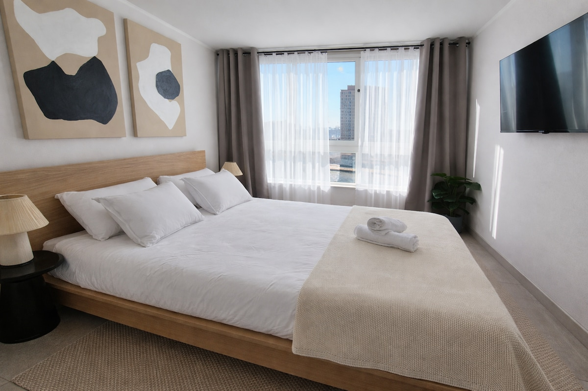
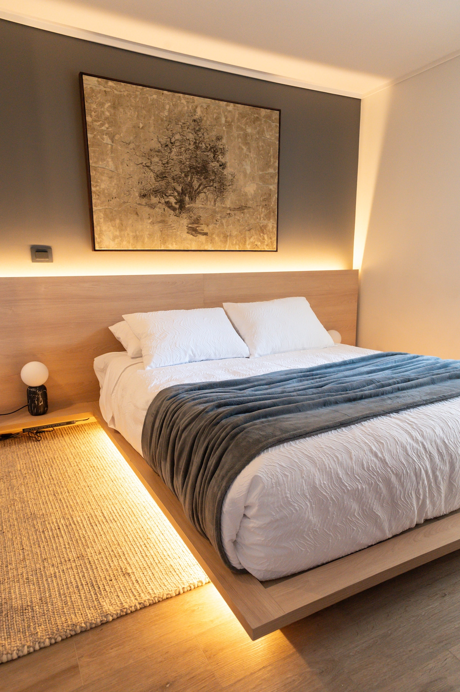
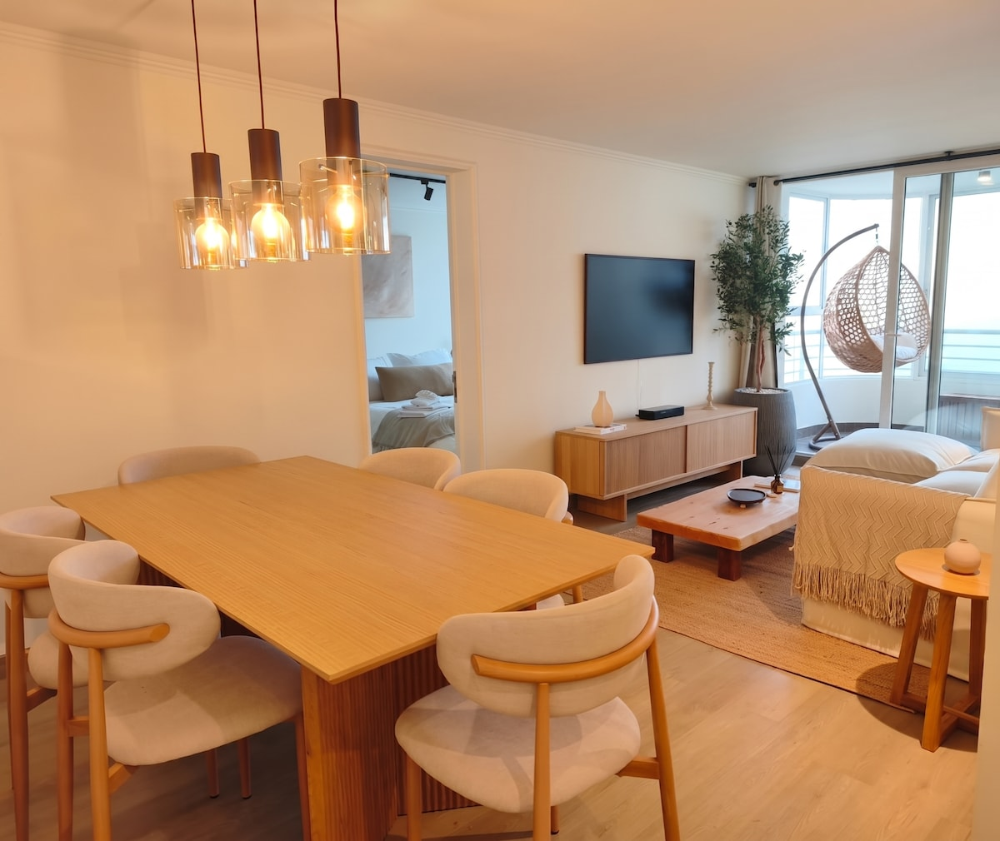

Somos un operador completo de renta corta: diseñamos, equipamos, publicamos y administramos. Llevamos 9 años haciéndolo, con propiedades propias y de terceros, bajo la misma cuenta y el mismo estándar. Esto es lo que vemos para tu 1 dormitorio del Edificio Matta, con datos de tu comuna y no con promesas.
Ver el mercado de tu zona Ir a la propuestaNo somos una corredora ni una empresa de aseo. Somos el operador que se hace cargo del ciclo completo: desde decidir si una propiedad da el ancho, hasta el reporte mensual de lo que rindió.
Con RADAR, nuestro motor de datos propio, evaluamos si una propiedad conviene antes de que pongas un peso. Es el mismo filtro que usamos cuando compra alguien de la casa.
Estudio de diseño propio. No decoramos bonito: proyectamos para que arriende mejor y fotografíe mejor, que es lo que finalmente mueve la reserva.
Compramos, coordinamos, montamos y hacemos el styling. Tú apruebas, nosotros ejecutamos. Sin que tengas que pisar una tienda ni recibir un despacho.
Publicación, precio dinámico, mensajería, check-in, limpieza, mantención, resolución de problemas y reporte mensual. Tú recibes el depósito.
Esto es lo que llevamos anotado para la visita. Si algo no calza, lo corregimos ahí mismo: preferimos partir de tu realidad y no de un supuesto nuestro.
Lo que sabemos antes de la visita. Superficie, orientación, estado real y equipamiento existente los levantamos en terreno.
Ñuñoa es, de las comunas que seguimos a diario, una de las pocas donde el arriendo tradicional ya deja un delta positivo. Eso cambia la conversación: acá la renta corta no entra a salvar un número malo, entra a multiplicar uno que ya funciona. Es una posición cómoda, y una buena razón para no apurarse en decidir.
Lo que empuja la demanda en tu radio: el Estadio Nacional — conciertos y partidos generan picos concretos de tarifa que se capturan con precio dinámico y se regalan con tarifa plana —, la Línea 3 y Plaza Egaña, y un flujo estable de estadías de trabajo y de salud entre semana. Un 1D bien operado en Ñuñoa no vive del turismo de verano.
Los anuncios de 1 dormitorio con mejor desempeño en la comuna comparten tres cosas: estacionamiento o metro a pasos, fotografía profesional, y una calificación sobre 4,8. Las tres son gestionables. Ninguna depende de la suerte.
Y tu edificio tiene una carta que la mayoría no tiene: piscina, quincho, gimnasio y lavandería. En un 1 dormitorio de 31 m², los espacios comunes dejan de ser un lujo y pasan a ser superficie utilizable que sí se puede vender en el anuncio. La piscina en particular es de los filtros de búsqueda que más mueven la tarifa en verano, y el quincho permite apuntarle a grupos que en un depto de este tamaño normalmente ni te buscarían. Bien fotografiados y bien redactados, valen tarifa.
Estos números salen de RADAR, nuestro motor propio: 14.054 anuncios perfilados en 23 comunas, con barrido diario. Para tu caso filtramos exactamente a 1 dormitorio en Ñuñoa — nunca un promedio genérico de Santiago — y sacamos los valores extremos antes de calcular.
Anuncios reales de 1 dormitorio en Ñuñoa, con su tarifa y su calificación pública. Este es el estándar que hay que superar.
| Anuncio | Tarifa/noche | ★ | Reseñas |
|---|---|---|---|
| New Studio · Plaza Egaña · metro | $57.730 | 4,90 | 166 |
| Ñuñoa con estacionamiento, metro, estadios y mall | $50.272 | 4,85 | 141 |
| Estudio equipado A/C + parking · Estadio Nacional | $47.000 | 4,80 | 203 |
| Dúplex en el corazón de la comuna | $46.720 | 4,95 | 296 |
| A pasos del Estadio Nacional · parking + wifi | $45.926 | 4,95 | 237 |
| Lindo departamento en Ñuñoa | $45.028 | 4,76 | 246 |
Tu alternativa real no es dejarlo vacío: es arrendarlo a largo plazo. Así se comparan, sobre la misma base.
| Escenario | Supuesto de operación | A tu bolsillo, al mes |
|---|---|---|
| Arriendo tradicional | Mediana de cierre en Ñuñoa 1D (base de 430 publicaciones), descontando un mes de vacancia al año | $460.000 |
| Renta corta · conservador | Si opera peor que el promedio — 48% de ocupación, unas 15 noches al mes | $454.000 |
| Renta corta · base | Como el promedio del mercado — 73% de ocupación, unas 22 noches al mes | $690.000 |
| Renta corta · cuartil superior | Como el 25% que mejor opera — 97% de ocupación, unas 29 noches al mes | $917.000 |
Lo decimos nosotros primero: en el escenario conservador la renta corta te deja prácticamente lo mismo que el arriendo tradicional — $454.000 contra $460.000. Si el departamento se opera mal, esto no es negocio, y preferimos que lo sepas antes de firmar y no después.
El caso se gana del escenario base hacia arriba, y ahí la diferencia deja de ser marginal: unos $230.000 más al mes en el escenario base. Eso sin contar lo que el arriendo largo cuesta y no aparece en la planilla: vacancia entre contratos, deterioro sin control y reajustes que siempre llegan tarde. Por eso nuestro trabajo es la operación y no el ladrillo: entre nuestro mejor y nuestro peor departamento hay una diferencia de casi cuatro veces, y la propiedad no explica esa brecha.
El reloj que ya está corriendo
Te entregan mañana. Desde ese día el departamento genera gastos comunes y contribuciones, y no genera nada a cambio. En la banda base, cada mes que pasa cerrado cuesta del orden de $690.000 que no se recuperan después. Es la única cifra urgente de todo este documento: no hay que decidir rápido por presión comercial, hay que decidir rápido porque el costo de no decidir es diario.
Casos reales de nuestra cartera, con su calificación pública de Airbnb al día de hoy. Mostramos zona y desempeño; la identidad de cada propietario se mantiene reservada, igual que mantendríamos la tuya.



La calificación no es una métrica de vanidad: en Airbnb decide si tu anuncio aparece arriba o desaparece del buscador. Y se construye con operación, no con decoración. Estas son reseñas públicas y textuales de departamentos que administramos.
★★★★★“Realmente recomiendo este alojamiento, muy buen precio, conectividad, limpieza y Camilo un anfitrión 20/10, preocupado de cada detalle, excelente servicio.”
Danilo · Ñuñoa, Chile — sobre el 1D de Ñuñoa
★★★★★“Muy cómodo y acogedor el departamento. Tuve una situación con la ducha y toallas que rápidamente fue resuelto por Camilo. Destaco que en todo momento buscó dar una solución. Lo ocurrido no empaña la experiencia.”
Daniel · Chile — sobre el depto de Santiago Centro
★★★★★“Un Airbnb realmente hermoso, exactamente como en las fotos, todo se veía completamente nuevo y muy acogedor. Lo recomendaría encarecidamente.”
Maddy · 5 años en Airbnb — sobre el depto de Santiago Centro
★★★★★“El departamento no solo es hermoso y está decorado con un gusto exquisito, sino que además ofrece unas vistas insuperables y estaba impecablemente limpio. Sin dudas volvería.”
Guadalupe · Santiago, Chile — sobre el depto de Recreo, Viña
★★★★★“Excelente lugar, esta es la segunda vez que nos quedamos aquí y es espectacular: lugar, limpieza, full equipado, todo es igual a las fotografías, lindo y acogedor diseño.”
Jorge · Santiago, Chile — huésped que volvió
★★★★★“El depto es increíble, muy bonito, limpieza impecable, cómodo, y el flujo de comunicación con Camilo fue muy ágil. ¡Recomendadísimo!”
Kevin · Santiago, Chile — sobre el 1D de Ñuñoa
4,76★ sobre 1.202 evaluaciones, categoría Superanfitrión vigente, 9 años de operación continua y más de 10.000 reservas gestionadas. El tiempo de respuesta promedio es menor a una hora, que en la práctica es la variable que más mueve la conversión de una consulta en reserva.
Tenemos estudio de diseño propio. Eso significa que el proyecto no se subcontrata y que el criterio es comercial: cada decisión se toma pensando en cómo se va a ver en la foto y en cómo lo va a vivir el huésped que después escribe la reseña.
Medimos, fotografiamos y detectamos lo que hay que resolver antes de decorar: iluminación, cortinas, estado de muros, lo que falta y lo que sobra.
Te mostramos cómo va a quedar antes de comprar nada, con opciones montadas sobre las fotos de tu propio departamento. Tú eliges; no te pedimos que imagines.
Coordinamos proveedores, compras, despachos y armado. Un solo interlocutor. No tienes que recibir muebles ni perseguir a nadie.
El montaje final y la sesión de fotos. Es la inversión de mayor retorno del proceso completo: es, literalmente, lo único que ve el huésped antes de decidir.
Nuestro sesgo de diseño: calidez y materiales naturales — madera clara, paleta tierra, textiles, luz cálida en capas. No es una moda: es lo que mejor fotografía y lo que menos se cansa con el uso intensivo. Un departamento de renta corta recibe muchas más personas que uno arrendado a un año, y lo que se elige tiene que aguantar eso.
Acá es donde se define el resultado. La propiedad pone el techo; la operación decide cuánto de ese techo se alcanza.
Anuncio escrito y fotografiado para convertir, en todos los canales. Aprovechamos la ventana de "Novedad" que Airbnb le da a los anuncios nuevos: dura entre 30 y 90 días y no se repite nunca. Lanzar bien la primera vez vale oro.
Tarifa dinámica por temporada, día de la semana, eventos y demanda real. En Ñuñoa, los eventos del Estadio Nacional son picos concretos que una tarifa plana simplemente regala.
Respondemos en menos de una hora, todos los días del año. Check-in autónomo con cerradura inteligente. Cuando algo falla — y a veces falla — lo resolvemos nosotros.
Protocolo entre estadías, reposición de insumos y revisión del estado. La limpieza es la causa número uno de las malas calificaciones; por eso no la dejamos al azar.
Noches, tarifa promedio, ocupación, ingresos y gastos. Sin letra chica. Sabes exactamente de dónde viene cada peso que recibes.
Bloqueas fechas cuando lo necesites y mantienes el control de las reglas de tu departamento. La propiedad sigue siendo tuya en todo sentido.
Valores de referencia para un 1 dormitorio. El número final se cierra después de la visita, cuando sepamos qué hay y qué falta — no antes.
La inversión de habilitación se recupera típicamente en 1 a 3 meses de operación en el escenario base. Nuestra administración es un porcentaje de lo que el departamento genera: si no genera, no cobramos. Tu incentivo y el nuestro apuntan al mismo lado, que es el único modelo bajo el cual tiene sentido que existamos.
Si cerramos el proyecto en los próximos días, el styling y la sesión de fotografía profesional van bonificados. La razón es concreta y la vas a ver tú mismo mañana: te entregan junto con tus vecinos, y todos van a salir a amoblar la misma semana. Esos vecinos son tu competencia más dura — misma tipología, mismos metros, las mismas fotos de piscina y quincho. El que publica primero se lleva las primeras reseñas del edificio, y las reseñas son lo único que después no se puede comprar. Leyerd tiene el detalle para conversarlo contigo en la visita.
Un equipo chico y responsable de punta a punta. Vas a saber siempre con quién estás hablando.
Medimos, fotografiamos el estado de entrega y revisamos los espacios comunes. Aprovechamos de dejar registrado cualquier detalle de la recepción, que conviene tener por escrito desde el día uno. Sin costo y sin compromiso.
Proyecto de diseño para los 31 m², presupuesto de equipamiento exacto y proyección afinada para tu unidad. En días, no en semanas.
Apruebas el proyecto y la lista de compras. Recién ahí se compromete plata.
Compras, montaje, styling y fotografía profesional. Alrededor de 30 días.
Sale el anuncio aprovechando la ventana de "Novedad" y antes que tus vecinos del mismo edificio. Desde ahí nos hacemos cargo nosotros: tú recibes el reporte.